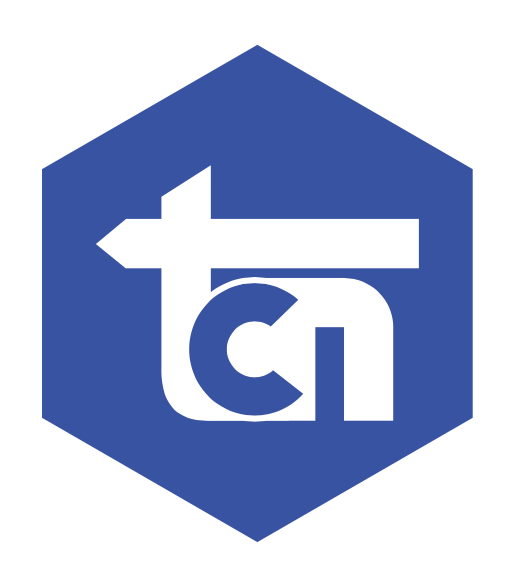

Products
Industrial products across mechanical, electrical, instrumentation, safety, coatings and equipment.

TCNPT Telaga Cahaya NusantaraAbout TCN
PT Telaga Cahaya Nusantara is a general trader and contractor serving industrial clients across Indonesia, with offices in Makassar and Jakarta.
One partner from product enquiry to completed installation.
Makassar · Jakarta · IndonesiaWhat we provide
Industrial products across mechanical, electrical, instrumentation, safety, coatings and equipment.
Aluminium and stainless steel structures, industrial piping, building and interior work, and epoxy coating floors.
We pack and ship a wide range of products and equipment to destinations around the world.
Our vision
TCN was established with full commitment to deliver high-quality service and products. We also provide high-value solutions for a diverse range of customer requirements.
Our mission
We strive towards providing high-quality, competitively priced products and services to our diverse range of customers. We focus on the exacting needs of clients and deliver quickly through our commitment to do our best.
Our value
We communicate directly, advise responsibly, and honour the commitments we make.
Our procurement and project teams work together, so clients coordinate with one company rather than several.
Excellence in product and service across a wide range of industries, maintained through quality, cost effectiveness and responsiveness.
How we operate
01Understand the requirement
02Confirm specification, availability and price
03Supply, and install where within scope
04Support the work through to completion